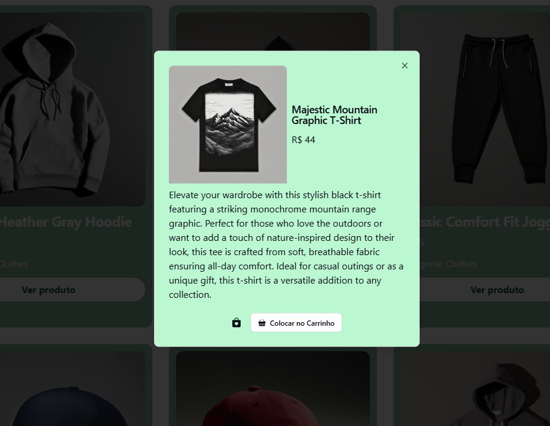

Biblioteca de Filmes
Um desenvolvimento FullStack utilizando Typescript no backEnd, junto com o mysql para persistência de dados. No frontEnd contém React.js, TypeScript, Vite e TailwindCSS.
GreenShop
Um desenvolvimento frontEnd para consumo de API E-Commerce, onde foi utilizado React.js, TypeScript, Vite e TailwindCSS.
